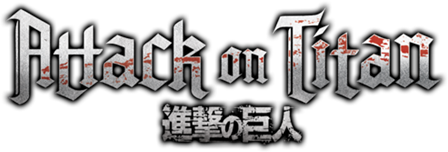

<mat-toolbar color="primary">
    
    <div class="spacer"></div>
    <button routerLink="/historia" mat-flat-button color="primary"><mat-icon>book</mat-icon>Historia</button>
    <button routerLink="/personagens" mat-flat-button color="primary"><mat-icon>person</mat-icon>Personagens</button>
    <button routerLink="/temporadas" mat-flat-button color="primary"><mat-icon>video_library</mat-icon>Temporadas</button>
</mat-toolbar>